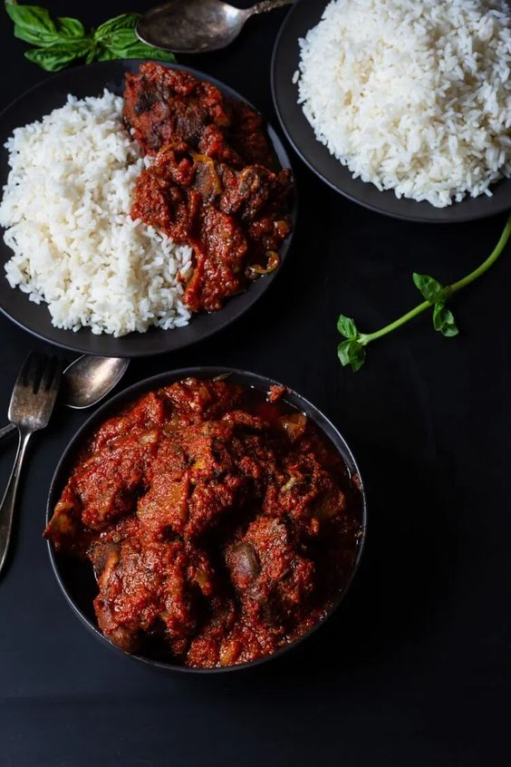

Tomato Stew

Tomato Stew Recipe
That Stew!
Tomato stew has a lovely red hue and delicious bold flavors.
With rich tomatoes as its flavor base, this stew is truly enticing.
What gives its distinct flavor, though, is the gamey ram.
Because it’s very expensive, this protein is considered celebratory meat and is often only served during
special occasions, such as the Islamic holiday, Eid-el Kabir.
Ingredients
- 5 plum tomatoes, chopped, divided
- 2 red bell peppers, chopped
- 1/2 red onion, chopped
- 1/2 red onion, sliced
- 2 habanero peppers, chopped
- 6 cloves garlic
- 12 oz tomato paste
- 1 tablespoon salt, plus 1 teaspoon salt, divided
- 1 1/2 teaspoons black pepper, divided
- ½ cup water
- 1 cup vegetable oil
- 1 1/2 lb flank steak, cut into strips
- 1 teaspoon fresh rosemary
- 1 teaspoon paprika
- 1 teaspoon curry powder
- 2 cubes beef bouillon
- 1 bay leaf
- white rice, cooked, for serving
- fried plantain, for serving
- scallion, for serving
- fresh parsley, for serving
Steps
- In a food processor or blender, combine 4 chopped plum tomatoes,
red bell peppers, chopped red onion, habanero peppers, garlic cloves,
tomato paste, 1 tablespoon salt, 1 teaspoon pepper, and water.
Puree until smooth.
- Heat vegetable oil in a large pot over medium-high heat.
- Add the remaining tomato, sliced onion, remaining salt, and remaining pepper.
Sauté until fragrant.
- Add steak, rosemary, paprika, curry powder, and bullion cubes.
Cook until the steak is golden brown and cooked through, about 10 minutes.
- Add the blended tomato and pepper mixture and the bay leaf.
- Bring to a boil over high heat. Cover and simmer at low heat for
20 minutes, until the stew has thickened.
- Fish out the bay leaf.
- Remove stew from heat and let sit 10 minutes.
- Serve with white rice and fried plantains. Garnish with scallions and parsley, if desired.
Main Page